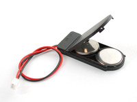

Originally, embedded wires and modified through-hole components
Today, conductive thread and components designed to be sewable, including Gemma, LilyPad, and Flora
From Basic
Photo and design by NancyLee Bergey
...to Elaborate
Photo & design by Becky Stern
Today: Masks
Designing and sewing a felt mask with blinking lights on it, using conductive thread, sewable battery pack, LEDs and switches, and the Gemma, a pre-programmed microcontroller. (Also beads, sequins, feathers, and whatnot.)
Parts

Light Up an LED
Put two batteries in the batter holder
Use one battery holder, one Gemma, one LED, and two alligator clips to light up an LED. What did you learn?
Light Up an LED
Use one battery holder, one Gemma, one LED, and two alligator clips to light up an LED. What did you learn?
Positive on the Gemma to positive on the LED
Negative on the Gemma to negative on the LED
Batteries goes into the holder + (smooth) side up near the hinge, the other reversed
Battery plugs into the Gemma only one way
The switch on the battery holder needs to be turned on
What’s Going on Inside the Circuit?
The battery has two ends, one with high voltage (electric potential) and one with low voltage.
If we create a path from the V+ side of the battery to the V- side, the current will follow it.
Short Circuits
Will the LED light up in the circuit below?
Short Circuits
Electrons want to take the easiest path. Flowing through conductive thread is easy, but flowing through an LED is harder.
Electrons will go through an LED if the battery is powerful enough to push them through.
If you accidentally give the electrons a shortcut around the LED, they won’t go through it!
The Gemma
Instead of a simple on/off switch, the Gemma gives us more control over our LEDs by changing the voltage flowing to them over time.
The Gemma
Each numbered pad on the Gemma has a different effect:
blink (1/2 second off, 1/2 second on)
fade (0.4 s increasing, 0.4 s decreasing)
heartbeat (2 blinks every 1.5 seconds)
You can also program these pads to do other things -- we won't get into this today.
Connecting More LEDs
To connect more than one LED to each effect, we use a parallel circuit
Intro Sewing
Starting Stitches
Running Stitch
The easiest stitch just goes up and down through the fabric, following an imaginary line of dashes. For edges, you can also use a whip stitch, looping the thread around to hold them together.
Sewing with Conductive Thread
Use a single thickness of thread; tie a knot in the end farthest from the needle.
Make 3 loops through the pad of the Gemma or LED you are connecting.
Don't cross thread for different connections. (Unlike the alligator clips, the thread is not insulated.)
Suggestions for Success
Check the back for knots and loose threads; these can cause short circuits.
Needles are sharp, handle with care!
Leave the battery off until you’re ready to test, to avoid shocks & draining.
Use alligator clips to test the Gemma patterns before starting to sew.
If you have to cross conductive thread lines, use fabric as an insulator.
Use regular thread for ribbon and sequins.
Going Further
Gemma is only one of many in the Arduino family -- bigger, smaller, more pins, various add-ons
Project Night, every week, Thursday, 7pm
Cool project tutorials at eCrafting.org, learn.adafruit.com, and learn.sparkfun.com
Purchase sewable electronics from Adafruit or Sparkfun; MicroCenter also has Arduinos